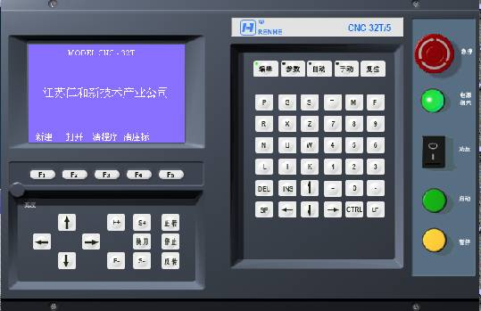
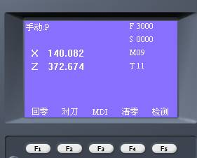
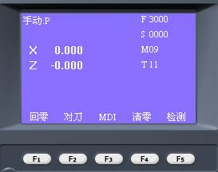
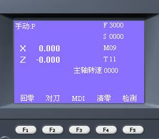
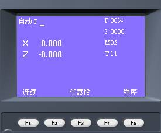
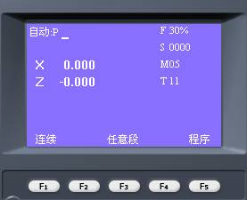
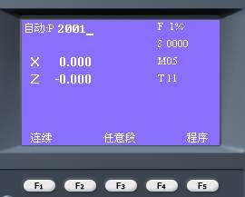
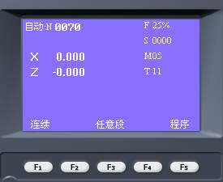

| 华中世纪星HNC-21T数控系统操作 |
RENHE32T/1数控系统采用LCD显示器，用LCD显示器显示加工程序编制过程；各种参数设定过程；自动和手动状态下工作台坐标的动态计数值以及主轴、刀位、冷却泵状态等辅助信息。

按此键进入程序管理方式，实现加工程序的输入、修改、拷贝、删除等操作
按此键进入参数设定方式，对快进速度、主轴最高转速、间隙补偿、换刀反转时间、主轴输出方式、刀补等参数进行设定操作
按此键进入自动运行方式，用于实际加工零件，可实现程序单段运行或连续运行。并可切换到另一程序或选择某一程序段运行
按此键进入手动运行方式，可进行手动进给、刀具回零、刀具坐标清零设参考点及对刀操作。在手动方式下，可对主轴、冷却泵、刀架进行操作，还可用手摇脉冲发生器代替四个点动方向键进行操作
结束当前状态，重新启动系统，回到主菜单。一般用于退出急停和用于误操作后出现的死机现象，以及退出检测状态
在程序编辑时，当光标停在某一数字或字母上，按DEL 键可删除该数字和字母，还可用于删除程序段和加工程序
插入键
输入空格时用
与其它键同时按下实现一些特殊功能
在编辑程序时，写完一个程序段，按回车确认换行，在“参数设定”方式下，不选参数时按 LF 键跳过，选中设定的参数修改后按 LF键确认修改。
急停开关
在加工运行过程中有效。实际加工过程中遇到意外情况，必须打断加工的执行，按下急停开关，使工作台停止运动。急停后只能将急停开关右旋使急停开关松开，再用RESET键退出急停状态，重新校核工作台起始点，再开始加工
功放开关
打开功放开关即可驱动电机及工作台按指定程序进行加工操作。
注意：系统开机时，先开电源开关，后开功放开关，系统关机时，先关功放开关，后关电源开关。
按此键发M03信号,主轴正转。
按此键发M05信号,主轴停止。
按此键发M04信号,主轴反转。
主轴输出方式设置为模拟时，按此键主轴转速提高一档。主轴转速从0r/min~主轴最高转速（由参数设定），各档之间相差20r/min。主轴输出方式设置为数字时，按此键输出S01信号。
主轴输出方式设置为模拟时，按此键主轴转速降低一档。主轴输出方式设置为数字时，按此键输出S02信号
在手动方式下，按此键刀架沿Y-方向进给。
在手动方式下，按此键刀架沿Y+方向进给。
按“手动”键,指示灯亮，系统进入手动方式，屏幕显示“手动工作方式”菜单如图3.2－1。在手动方式下，可对主轴、冷却泵、刀架进行操作。

图3.2－1 “手动工作方式”菜单
手动进给
按下点动方向键 Y-/F+ , Y+/F- 中的任何一个键就可按照键上所示的方向连续移动刀架，直至该键抬起，6个点动方向键所代表的坐标轴及进给方向分别是:
X轴负方向
X轴正方向
Z轴负方向
Z轴正方向
Y-/F+ Y轴负方向
Y+/F- Y轴正方向
刀架移动速度由手动进给速度决定。
本系统提供了8档手动速度，用数字键1-8分别选择相应的手动速度。8档手动速度如下：
|
图3.2－2
手动一般用于加工前调整刀架的起始点或是进行一些简单的加工，注意：
（1）手动只能是直线运动，分别是X+、X-、Y+、Y-、Z+、Z-。
（2）用户根据显示的数值知道工作台所处的位置，当一进入点动方式，刀尖的现行位置即显示在屏幕上，根据点动方向计数并动态显示工作台的坐标值,X、Y、Z三个方向的计数分别保存，互不干涉。
（3）操作：单步点动，当你需要微量进给时，按下方向键不超过0.2秒即可；如需要连续运动，按下方向键，直到松开键才停止运动。
（4）手动方式具有自动升降频过程。即按下手动键连续移动工作台时，工作台通过加速过程达到设定的速度。同理，松开手动键时工作台先减速，再停止。
（5）手动超程（当机床装有超程保护开关时）。
当工作台沿某一方向移动到保护开关设置的位置时,工作台将不能再向前移动,同时屏幕显示“超程”,此时只能让工作台沿相反方向移动。
手动方式下对主轴、冷却泵及刀架的操作
当配有相应的机床电气时，可分别对主轴、冷却泵及刀架等进行如下操作
1. 当主轴设定为模拟方式,按面板上的S+或S-键可使主轴转速提高或降低一档，本系统主轴转速从最低转速值0转/分至系统设定的主轴最高转速可调,各档之间相差20转/分。“手动工作方式”菜单中S700表示主轴转速为700r/min。主轴最高转速可根据用户要求设定。若为数字方式,按S+,则发S01信号, 按S-,则发S02信号。
2.按面板上“正转”键则主轴正转，屏幕显示M03。图3.2－1中M03表示主轴正转状态。
3.按“反转”键，主轴反转，屏幕显示M04。
4.按“停止”键，主轴停止，屏幕显示M05。
5.按CLNT ON键，冷却泵开，屏幕显示M08。
6.按CLNT OFF键，冷却泵关，屏幕显示M09。
7.按面板上依次换刀键 或“换刀”键可以依次换刀
对装有四工位电动刀架的机床，每按一次换刀键，刀架旋转一个工位（90°）。同时屏幕上显示相应的刀位信息。
手动回零
在手动方式下按功能键F1，系统进入回零状态。
在回零方式下，通过点动键可以控制刀架单方向以G00设定的速度返回起始点。刀具回零后，按“退出”下面的F1退出至“手动工作方式”菜单。
注意：（1）如果设置参考点后没有启动过程序，或者在程序启动时刀架在参考点，则回零后刀架仍在参考点上。
（2）如果程序启动时刀架不在参考点上，回零后刀架所处的位置为上次程序启动时所在位置。此时如果要使刀架回到参考点上，须用MDI方式下的G46，G47，G49指令回参考点。
（3）如果所按下的点动方向键与实际回零方向不符时，则无效。
（4）若有电网停电，使加工过程中断，则已走完的程序段系统有位置记忆，未走完（正在执行）的程序段位置将被丢失，所以来电后的回零只能按记忆情况进行，而不能保证回零准确。
（5）一般来说,停电后必须重新找回参考点或重新对刀。
刀具坐标值清零（系统参考点的设置）
在手动方式菜单下按功能键F4，系统提示是否设置参考点，若是则按LF键，系统设置参考点，否则按任意键退出。

图3.2－3
MDI(手动数据立即执行)
在手动方式下按功能键F3，进入MDI菜单。在坐标显示区下面有一灰色光标,此处为指令输入位置。
在MDI方式下可以编制单一指令程序段执行。
在MDI方式下，键入G、S、T、M指令，按LF键确认，按启动键执行。
在MDI方式下，可执行的指令有：
G00、G01、G02、G03、G26、G27、G28、G29、G36、G37、G38、G39、G46、G47、G48、G49，T指令，S指令，M03~M05，M07~M09，M23~M25，M27~M29指令。
对于G00、G01、G02、G03指令，还应根据需要输入相应的绝对坐标值或相对坐标值。
例1：执行S01操作如下：
在MDI菜单下键入S01，灰色光标处显示S01，确认无误后按LF键，按启动键，系统发S01信号，同时在菜单上显示S01信号。
例2：执行G01 U10 W10 F150 操作如下：
在MDI下键入G01 U10 W10 F150, 确认无误后按LF键，按启动键，系统执行该指令。
检测
在手动方式下，按功能键F5，系统进入检测菜单。
当机床上装有光电编码器,并与主轴同步旋转时,在检测状态下可以检测主轴脉冲发生器（光电编码器）的脉冲数及主轴转速，并在显示器上分别显示，若主轴脉冲数为2400脉冲/转，转速为700转/分，则显示器分别显示2400和700。检测状态下的屏幕画面如图：


图3.2－5
连续运行
图3.2－5中按“程序”下面的功能键F5后,在光标下输入程序号如0001，按回车键，。屏幕同时显示三段程序，灰色光标指示当前将要执行的程序段，按面板上的启动键，系统从0001号程序的第一行开始逐段执行程序，并动态显示刀具坐标。在自动运行过程中，灰色光标指示在当前正在执行的程序段。

图3.2－6
在自动运行过程中，按功能键F1，可切换单段或连续运行方式，图中显示的为连续运行方式。
单段运行
在程序调试，零件试切削过程中，往往需要用单段运行方式。
在图3.2－6所显示屏幕下，按功能键F1，“连续”变成“单段”，进入单段运行方式。按一次启动键，系统执行一段程序即停止运行，再按一次启动键，执行下一段程序。即在单段方式下，每按一次启动键系统向下执行一个程序段。
加工速度的调整
自动加工时的加工速度（切削走刀速度）可用操作键F+、F-进行动态调整。本系统速度倍率共计有10%、20%、30%、40%、50%、60%、70%、80%、90%、100%、110%、120% 共12档，按一下F+ 则速度倍率增加一档，按一下F- 则速度倍率降低一档，图3.6中F100%表示速度倍率为100%。
注意：速度倍率的调整只在系统执行加工指令G01、G02、G03、G23时有效，系统执行其它指令如G00、G26、G27、G28.G29、G46、G47、G48.G49等时，其运行速度不受速度倍率的影响，而由参数设定中的G00速度确定。
G01、G02、G03的速度=程序指令给定速度×速度倍率
程序暂停
在程序调试，零件试切削及程序运行过程中，如需要程序暂停，按面板上的暂停键，程序停止运行，屏幕显示“暂停”。按启动键可再次启动程序，从暂停处继续加工。在暂停状态下不得按复位键，否则需重新对刀。
加工程序的调用
在实际使用过程中，经常要更换工件，因此自动运行时要调用相应的零件加工程序。以下面的程序为例：
P2011
N0010 M03
N0020 G00 X100
N0030 Z2
N0040 G01 W－25 F100
N0050 G27 M05
N0060 G29
N0070 M04
N0080 G00 X50 Z5
N0090 G02 U0 W－30 R50 F200
N0100 G27
N0110 M05
N0120 G29
N0130 M02
在图3.2－6中，按“程序”下面的软功能键F5，屏幕显示如图3.2－5，在光标处输入四位数的新程序名如2011后按回车键LF，屏幕显示如图3.2－7 ：
此时屏幕左上角的“自动”后面显示的程序名已经变为P2011，并且在下面的程序显示区内显示出P2011程序的前面三段程序内容，同时灰色光标指示将要执行的第一个程序段。
此时按启动键则系统依次从P2011程序的第一段开始执行程序。

图3.2－7
任意程序段启动
在实际调试及加工过程中，有时需要从程序中间的某一段开始加工，例如要从P2011程序中N0070段开始运行加工程序，在图3.2－7中按“任意段”下面的软功能键F3，在光标处键入要开始运行的程序段号如“0070”，未按回车键确认前屏幕显示如图3.2－8 ：

图3.2－8
在“N”后面的光标处输入要开始运行的程序段号“0070”后，按回车键LF确认，屏幕显示变为图3.2－8 。此时程序显示区显示的是从选定的程序段N0070开始的三个程序段。同时灰色光标指示将要执行的程序段为N0070。
此时按启动键程序将从N0070段开始逐段依次往下执行。
注意：
任意段启动所选择的程序段必须是完整的指令，如果因为具备模态而在程序中省略的指令字必须先补齐。例如在P2011程序中，如要从N0030段开始运行，则应该先把“N0030 Z2”改为“N0030 G00 Z2”，否则出错。
2．由于任意段启动时，计算机并不分析该段以前的程序内容，只按照本程序段指令执行程序，可能使同一部分程序的运行结果不同，即其轨迹可能会与运行整个程序时该部分轨迹完全不同，因此，在使用前必须对程序加以分析，找出合理的程序段再使用。否则达不到加工目的，可能使工件报废甚至撞坏刀架。